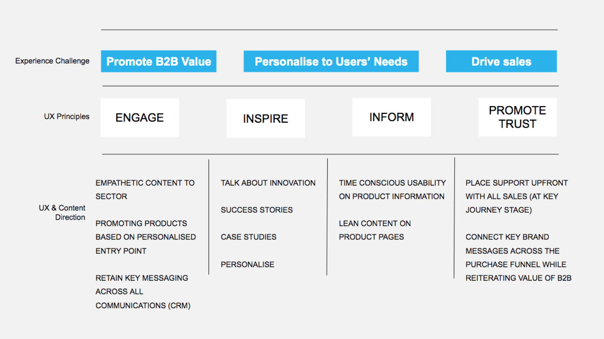

Samsung for business
Team & Role
In September 2020, I joined Cheil, an agency exclusively serving Samsung as its sole client. Throughout my tenure, I had the opportunity to work across various teams, including B2B, optimisation, and innovation. Despite there being a central design team, each of us was assigned to specific team dedicated to various sections of the Samsung site. This structure meant that within these teams, I functioned as the sole designer, directly engaging with Samsung (the client). Our daily stand-ups and reviews were conducted with the Cheil design team, comprising five designers and a head of design.
Problem Statement
1. Sansung B2B mission is not reflect: Build for the new ways business is done
2.Page structure/ organization : Page not ranking high in search results. Improve site structure Content and layout
3.Target business needs: Need for personalisation Promote Business support upfront to help the sales decision maker
Design Process
Scope
When I embarked on this project, Cheil had not yet secured consent from Samsung to venture into the B2B sector, as our focus primarily revolved around B2C offerings. However, through our extensive investigation and proposal efforts, we successfully paved the way for Samsung to broaden its collaboration with Cheil into the B2B realm. My role encompassed thorough investigation and comprehension of both B2C and B2B site structures. This involved maintaining brand consistency, align with design systems from a B2C standpoint while delving into the specific customer demographics targeted by B2B offerings. Additionally, I meticulously analysed the information architecture of the pages. It's important to note that my work was intended as an initial proposal, with the aim of fostering a potential partnership and paving the way for future agile reconstructions of the B2B site
Tools
Figma | Miro | Pen & Paper | Google for competitors research and best practices
What we wanted to achive
Visit: That people knew about Samsung B2B site
Engagement: Promoting user actions through interactions enhance user's engagement
Personalise: Help to connect the users needs to form a cohesive product experience
Sign up: Encourage users to registered at Business shop to access special volume pricing.
Return: User profile, personalised conten
Convert: Product targeted to business needs Personalisation Exclusive Offers & Rewards
Targeted audience

Proposed journey – Information architecture map
Page example - Why Samsung page
Journey map
Actions - What does the customer do?
Search info that works for Large enterprise,Small/medium enterprise or Start- ups
Examine specific features and reviews
Search for packages tailored to their specific industries
Search for integrations with specific systems and processes
Search for discounts (bulk discounts)
Share research on products and brands with other skateholders
Share for partnership values
Understand the ROI (Return of Investiment)
Purchase demo
Easy way of sharing information with company peers
Compelling reasons to buy from Samsung
Touchpoint - What part of the service do they interact with?
Knox
Samsung Care + Technical Support
start ups in Mobility
videos
Case studies
Products tailored for the different industries needs
Samsung DeX Smart Switch Enterprise Mobility 5G
More reasons to shop with Samsung (Free shipping, free returns) Samsung AppStack with exclusive discounts
Allow to download .pdf or shareable YouTube links
Video on partnership examples
Investment x money value
Knox-suite free trial
Customer Thought - What is the customer thinking?
Security, updates, security management
Device setup. Repair devices program. Manage investment in capital
What kind of connectivity will I have? what partners?
Easy to understand the benefits of the technology
Nice to see how well it work for other related business
Personalised products ( example rugged for outdoors)
Technology and devices that support my business
Package in bulk discounts, shipping, returns policy
Social media involved
Partner with big brands, connectivity, seemless work flow
See product value
Try the product before buying
Opportunities
Highlight key benefits of Knox
Stablish the benefits of Samsung care+ and technical support
Google, Microsoft, Cisco, offer to become a partner for free. Add FAQs
Enhance key content with relevant/related videos
Case studies within each industry
Enterprise edition, Rugged, New computing
Samsung Dex, Smart Switch, enterprise Mobility and 5G
Section with more reasons to buy for Samsung (finantial USPs)
Create shareable USPs
Offer peace of mind though partnership with key industry providers
Some calculator? To help calculate the product value over x amount of years
Offer free trial for a month and then invite to buy it